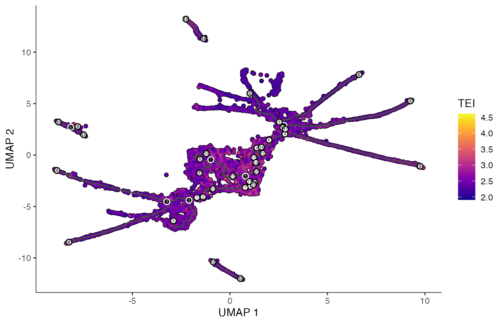
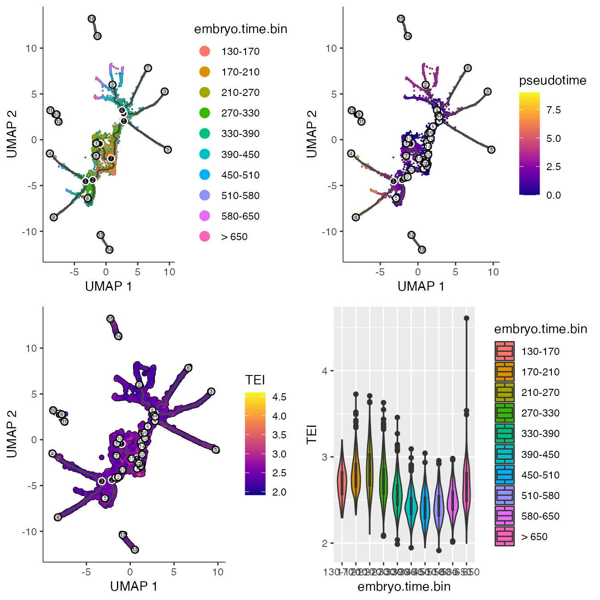

scTEI
vignettes/scTEI.Rmd
scTEI.RmdAbstract
scTEI add any phylogenetically based transcriptome evolutionary index (TEI) to single-cell data objects
The goal of scTEI is to provide easy functionality to
add phylogenetically based transcriptome evolutionary index (TEI) to
single-cell data objects.
For a comprehensive overview about the topic of gene age assignments, transcriptome age index (TAI) and its derivates (TDI, TPI, Adjusted SD, PhastCons, …) see e.g.:
Since all of these values deal with the topic of weigthing transcriptome data with an evolutionary index, I combine all of them under one term transcriptome evolutionary index, short TEI.
The following sections introduce main single-cell gene
expression data analysis techniques implemented in scTEI,
which basically update basic myTAI functions to deal with
large single-cell data objects:
Adding transcriptome evolutionary index (TEI) to single-cell data objects
Seurat
monocle3
Visualizing TEI values
A variety of data objects are used to deal with sparse count data
(dgCMatrix) from single-cell RNA sequencing
(scRNA-seq).
Here, we focus on the common used R packages Seurat and
monocle3, which both use a sparseMatrix object
to store scRNA count data.
Note: Apparently, one important note is that count data or subsequent normalized counts or scaled data needs to be positive.
One should consider transforming scaled data to positive scale prior applying TEI calculations.
In this section we will introduce how to add TEI values to either a
seurat or monocle3 cell data set.
Note that prior calculating TEI one needs to retrieve phylogenetic or taxonomic information for your focal species.
This might be a phylostratigraphic map (as introduced by (Domazet-Lošo, Brajković, and Tautz 2007)) or an ortho map (I call them, see e.g. (Julca et al. 2021) or (Cazet et al. 2022)), which can be obtained by assigning to each orthogroup (OG) or hierachical orthogroup (HOG) along a given species tree the ancestral node.
Please have a look at the introduction of the great
myTAI package for possible sources, how to get such
phylostratigraphic maps (myTAI
- Introduction).
To create an ortho map, one simply needs to get OGs or HOGs with e.g. OrthoFinder ((Emms and Kelly 2019)) or Proteinortho ((Lechner et al. 2011)) or any other ortholog prediction tool (see (Linard et al. 2021)) using a set of species that cover the species range of your interest. Parse each OG or HOG for the oldest clade as compared to a species tree and your focal species of interest.
Or e.g. use pre-calculated OGs from e.g. https://omabrowser.org/oma/home ((Schneider, Dessimoz, and Gonnet 2007)) or https://bioinformatics.psb.ugent.be/plaza/ for plants ((Proost et al. 2009)).
Please visit the following documentation to install
Seurat and monocole3
org.Hs.eg.db and org.Mm.eg.db to
be able to convert ensembl IDs into gene name alias
BiocManager::install(
c(
"org.Hs.eg.db",
"org.Mm.eg.db")
)ggplot2 viridis cowplot ComplexHeatmap
install.packages("ggplot2")
install.packages("viridis")
install.packages("cowplot")
BiocManager::install("ComplexHeatmap")For Seurat, we use scRNA data obtained from
SeuratData for the model organism Caenorhabditis
elegans (Packer et al. 2019) and
phylogenetic data obtained from (Sun,
Rödelsperger, and Sommer 2021)
(Sun2021_Supplemental_Table_S6).
Here, for demonstration purposes, we will be using the 6k
Caenorhabditis elegans embryos object that is available via the
SeuratData package.
# load Packer and Zhu et al (2019) data set
SeuratData::InstallData("celegans.embryo.SeuratData")
celegans <- SeuratData::LoadData("celegans.embryo")
dim(celegans)## [1] 20222 6188## [1] "WBGene00010957" "WBGene00010958" "WBGene00010959" "WBGene00010960"
## [5] "WBGene00010961" "WBGene00000829"
# preprocess scRNA
all.genes <- rownames(celegans)
celegans <- Seurat::NormalizeData(
celegans,
normalization.method = "LogNormalize",
scale.factor = 10000) |>
Seurat::FindVariableFeatures(selection.method = "vst",
nfeatures = 2000) |>
Seurat::ScaleData(features = all.genes) |>
Seurat::RunPCA(dims=50) |>
Seurat::RunUMAP(dims = 1:10)
# overwrite NA in cell.type + add embryo.time.bin x cell.type
celegans@meta.data$cell.type[is.na(celegans@meta.data$cell.type)] <- "notClassified"
celegans@meta.data["embryo.time.bin.cell.type"] <- paste0(
unlist(celegans@meta.data["embryo.time.bin"]),
"-",
unlist(celegans@meta.data["cell.type"]))
# load Caenorhabditis elegans gene age estimation
celegans_ps <- readr::read_tsv(file = system.file("extdata",
"Sun2021_Orthomap.tsv", package = "scTEI"))
table(celegans_ps$Phylostratum)##
## 0 1 2 3 4 5 6 7 8 9 10 11 12 13
## 1290 5434 4666 603 1039 808 274 884 590 511 384 1113 1277 1167
# define Phylostratum
ps_vec <- setNames(as.numeric(celegans_ps$Phylostratum),
celegans_ps$GeneID)
# add TEI values
celegans@meta.data["TEI"] <- TEI(
ExpressionSet = celegans@assays$RNA@counts,
Phylostratum = ps_vec
)## Use multiple threads to calculate TEI on sparseMatrix
celegans@meta.data["TEI"] <- TEI(
ExpressionSet = celegans@assays$RNA@counts,
Phylostratum = ps_vec,
split = 1000,
threads = 2)
# make FeaturePlot
p2 <- FeaturePlot(
object = celegans,
features = "TEI",
min.cutoff='q05',
max.cutoff='q95',
cols = viridis(3))
print(p2)
# make RidgePlot
p3 <- RidgePlot(object = celegans,
features = "TEI",
group.by = "embryo.time.bin")
print(p3)## Picking joint bandwidth of 0.0512
# make RidgePlot by cell type
Seurat::Idents(celegans) <- "cell.type"
p4 <- RidgePlot(object = celegans,
features = "TEI",
group.by = "cell.type") +
Seurat::NoLegend()
print(p4)## Picking joint bandwidth of 0.054
# subset to specific cell type - ADF + notClassified
ADF <- subset(celegans,
cells = c(grep("ADF",
celegans@meta.data$cell.type),
grep("notClassified",
celegans@meta.data$cell.type)))
p5 <- DimPlot(object = ADF)
Seurat::Idents(ADF) <- "embryo.time.bin"
p6 <- DimPlot(object = ADF)
p7 <- RidgePlot(ADF, "TEI")
Seurat::Idents(ADF) <- "embryo.time.bin.cell.type"
p8 <- RidgePlot(object = ADF, features = "TEI") +
Seurat::NoLegend()
# make grid plot
print(plot_grid(p5, p6))
print(plot_grid(p7, p8))## Picking joint bandwidth of 0.0608## Picking joint bandwidth of 0.0704
# use pMatrix as data to cluster
celegans.TEI <- Seurat::CreateSeuratObject(counts = celegans@assays$RNA@counts,
meta.data = celegans@meta.data, row.names = rownames(celegans@assays$RNA@counts))
celegans.TEI@assays$RNA@data <- pMatrixTEI(
ExpressionSet = celegans.TEI@assays$RNA@counts,
Phylostratum = ps_vec
)
all.genes <- rownames(celegans.TEI@assays$RNA@data)
celegans.TEI <- Seurat::FindVariableFeatures(
celegans.TEI,
selection.method = "vst",
nfeatures = 2000) %>%
Seurat::ScaleData(do.scale = FALSE, do.center = FALSE,
features = all.genes) %>%
Seurat::RunPCA(dims=50) %>%
Seurat::RunUMAP(dims = 1:20)## Warning: Not all features provided are in this Assay object, removing
## the following feature(s): WBGene00018440, WBGene00013501, WBGene00017610,
## WBGene00219374, WBGene00008328, WBGene00008881, WBGene00020009, WBGene00010424,
## WBGene00017211, WBGene00015276, WBGene00219372, WBGene00044439, WBGene00015588## Warning in PrepDR(object = object, features = features, verbose = verbose):
## The following 88 features requested have zero variance (running reduction
## without them): WBGene00019055, WBGene00010102, WBGene00010647, WBGene00194713,
## WBGene00194680, WBGene00235164, WBGene00194689, WBGene00206507, WBGene00045272,
## WBGene00235158, WBGene00002109, WBGene00021641, WBGene00018204, WBGene00010098,
## WBGene00001237, WBGene00219421, WBGene00022674, WBGene00011545, WBGene00012760,
## WBGene00011707, WBGene00017985, WBGene00044562, WBGene00017411, WBGene00206383,
## WBGene00077522, WBGene00018565, WBGene00021386, WBGene00086553, WBGene00019049,
## WBGene00195086, WBGene00194832, WBGene00012231, WBGene00206417, WBGene00019251,
## WBGene00044479, WBGene00010995, WBGene00206379, WBGene00022111, WBGene00019174,
## WBGene00021804, WBGene00006399, WBGene00018242, WBGene00077493, WBGene00269431,
## WBGene00011387, WBGene00007642, WBGene00018310, WBGene00022395, WBGene00194952,
## WBGene00020775, WBGene00015340, WBGene00045208, WBGene00077773, WBGene00018968,
## WBGene00194684, WBGene00194866, WBGene00009143, WBGene00015339, WBGene00194982,
## WBGene00194983, WBGene00012301, WBGene00017890, WBGene00219310, WBGene00044502,
## WBGene00018850, WBGene00010596, WBGene00021966, WBGene00219280, WBGene00012455,
## WBGene00012214, WBGene00011414, WBGene00015774, WBGene00017584, WBGene00022410,
## WBGene00018297, WBGene00020040, WBGene00015945, WBGene00012309, WBGene00012254,
## WBGene00022339, WBGene00022648, WBGene00018234, WBGene00020261, WBGene00043054,
## WBGene00011934, WBGene00007271, WBGene00006051, WBGene00016724## PC_ 1
## Positive: WBGene00002085, WBGene00009212, WBGene00018352, WBGene00015610, WBGene00022112, WBGene00044066, WBGene00001854, WBGene00012113, WBGene00018606, WBGene00016071
## WBGene00001910, WBGene00008447, WBGene00008066, WBGene00012899, WBGene00019432, WBGene00013553, WBGene00002253, WBGene00014149, WBGene00020537, WBGene00012900
## WBGene00016711, WBGene00012021, WBGene00020205, WBGene00016457, WBGene00012420, WBGene00021299, WBGene00016088, WBGene00019040, WBGene00017713, WBGene00011156
## Negative: WBGene00018480, WBGene00017960, WBGene00018338, WBGene00009626, WBGene00005093, WBGene00011133, WBGene00077680, WBGene00001841, WBGene00013286, WBGene00001202
## WBGene00012708, WBGene00013370, WBGene00007440, WBGene00016682, WBGene00018069, WBGene00020573, WBGene00001614, WBGene00022744, WBGene00021160, WBGene00006664
## WBGene00003100, WBGene00044433, WBGene00006229, WBGene00009593, WBGene00020505, WBGene00009031, WBGene00011296, WBGene00005294, WBGene00016933, WBGene00017032
## PC_ 2
## Positive: WBGene00018352, WBGene00009212, WBGene00019040, WBGene00018606, WBGene00001910, WBGene00015610, WBGene00016071, WBGene00001854, WBGene00016711, WBGene00021915
## WBGene00014149, WBGene00017611, WBGene00016463, WBGene00008447, WBGene00019039, WBGene00017326, WBGene00007641, WBGene00007883, WBGene00016297, WBGene00012420
## WBGene00011763, WBGene00044066, WBGene00045386, WBGene00016114, WBGene00016457, WBGene00020772, WBGene00013553, WBGene00022112, WBGene00019432, WBGene00019482
## Negative: WBGene00002085, WBGene00002086, WBGene00015081, WBGene00019516, WBGene00006853, WBGene00001534, WBGene00006047, WBGene00001773, WBGene00018480, WBGene00003055
## WBGene00009386, WBGene00001841, WBGene00017648, WBGene00009593, WBGene00013370, WBGene00015974, WBGene00020675, WBGene00004149, WBGene00000684, WBGene00017960
## WBGene00009626, WBGene00012516, WBGene00011133, WBGene00018338, WBGene00020505, WBGene00006677, WBGene00006897, WBGene00077680, WBGene00006556, WBGene00003414
## PC_ 3
## Positive: WBGene00018352, WBGene00009212, WBGene00019040, WBGene00018606, WBGene00016071, WBGene00015610, WBGene00001854, WBGene00008447, WBGene00019039, WBGene00014149
## WBGene00044066, WBGene00022112, WBGene00020537, WBGene00019432, WBGene00020205, WBGene00013553, WBGene00017611, WBGene00008066, WBGene00002253, WBGene00012021
## WBGene00009861, WBGene00000561, WBGene00077531, WBGene00012899, WBGene00021299, WBGene00019035, WBGene00012900, WBGene00007641, WBGene00017713, WBGene00008612
## Negative: WBGene00045386, WBGene00016114, WBGene00016463, WBGene00007883, WBGene00003890, WBGene00009983, WBGene00045336, WBGene00194921, WBGene00016711, WBGene00011289
## WBGene00011500, WBGene00008484, WBGene00011763, WBGene00021915, WBGene00003642, WBGene00010864, WBGene00269432, WBGene00012753, WBGene00016397, WBGene00003934
## WBGene00045331, WBGene00017068, WBGene00012853, WBGene00004346, WBGene00016254, WBGene00044020, WBGene00044568, WBGene00011869, WBGene00019975, WBGene00010848
## PC_ 4
## Positive: WBGene00009212, WBGene00044066, WBGene00001910, WBGene00015610, WBGene00022112, WBGene00002253, WBGene00008447, WBGene00018606, WBGene00001854, WBGene00012899
## WBGene00016071, WBGene00016088, WBGene00012021, WBGene00012113, WBGene00013553, WBGene00008066, WBGene00021299, WBGene00016457, WBGene00020537, WBGene00012900
## WBGene00019432, WBGene00014149, WBGene00011156, WBGene00017713, WBGene00020205, WBGene00019039, WBGene00001960, WBGene00010100, WBGene00007934, WBGene00014156
## Negative: WBGene00018352, WBGene00002085, WBGene00017611, WBGene00021915, WBGene00007641, WBGene00016297, WBGene00020772, WBGene00011763, WBGene00019482, WBGene00015062
## WBGene00007883, WBGene00000561, WBGene00016463, WBGene00044068, WBGene00007286, WBGene00021272, WBGene00007490, WBGene00016397, WBGene00009355, WBGene00007675
## WBGene00016532, WBGene00019975, WBGene00016711, WBGene00016254, WBGene00044419, WBGene00008453, WBGene00009983, WBGene00017184, WBGene00011500, WBGene00013899
## PC_ 5
## Positive: WBGene00016114, WBGene00016463, WBGene00045336, WBGene00016711, WBGene00007883, WBGene00012753, WBGene00011763, WBGene00044568, WBGene00021915, WBGene00016254
## WBGene00009983, WBGene00044020, WBGene00008484, WBGene00016397, WBGene00003934, WBGene00019975, WBGene00004346, WBGene00164973, WBGene00019177, WBGene00020582
## WBGene00021268, WBGene00016297, WBGene00011869, WBGene00003642, WBGene00011500, WBGene00017076, WBGene00002105, WBGene00015354, WBGene00003745, WBGene00002089
## Negative: WBGene00045386, WBGene00003890, WBGene00018352, WBGene00194921, WBGene00010848, WBGene00045331, WBGene00005246, WBGene00019040, WBGene00016071, WBGene00013899
## WBGene00001854, WBGene00015610, WBGene00019150, WBGene00018606, WBGene00009212, WBGene00019416, WBGene00019039, WBGene00008447, WBGene00010693, WBGene00020537
## WBGene00022112, WBGene00006778, WBGene00020205, WBGene00044066, WBGene00019432, WBGene00014149, WBGene00006985, WBGene00045247, WBGene00017326, WBGene00008066## 09:43:00 UMAP embedding parameters a = 0.9922 b = 1.112## 09:43:00 Read 6188 rows and found 20 numeric columns## 09:43:00 Using Annoy for neighbor search, n_neighbors = 30## 09:43:00 Building Annoy index with metric = cosine, n_trees = 50## 0% 10 20 30 40 50 60 70 80 90 100%## [----|----|----|----|----|----|----|----|----|----|## **************************************************|
## 09:43:00 Writing NN index file to temp file /var/folders/1_/x30smsdj6mlgnvfrgvx8s4nh0000gp/T//RtmpRgTO9I/file6c0e4d71d9ab
## 09:43:00 Searching Annoy index using 1 thread, search_k = 3000
## 09:43:02 Annoy recall = 100%
## 09:43:03 Commencing smooth kNN distance calibration using 1 thread with target n_neighbors = 30
## 09:43:04 Initializing from normalized Laplacian + noise (using irlba)
## 09:43:05 Commencing optimization for 500 epochs, with 247274 positive edges
## 09:43:15 Optimization finished## Use multiple threads to calculate pMatrix
celegans.TEI@assays$RNA@data <- pMatrixTEI(
ExpressionSet = celegans.TEI@assays$RNA@counts,
Phylostratum = ps_vec,
split = 1000,
threads = 2)
# make FeaturePlot
p10 <- FeaturePlot(
object = celegans.TEI,
features = "TEI",
min.cutoff='q05',
max.cutoff='q95',
cols = viridis(3))
print(p10)
Seurat::Idents(celegans) <- "cell.type"
p11 <- DimPlot(celegans)
Seurat::Idents(celegans.TEI) <- "cell.type"
p12 <- DimPlot(celegans.TEI)
# make grid plot
print(plot_grid(p2, p11))
print(plot_grid(p10, p12))
# get TEI per strata
pS <- pStrataTEI(
ExpressionSet = celegans@assays$RNA@counts,
Phylostratum = ps_vec
)## Use multiple threads to calculate pStrata
pS <- pStrataTEI(
ExpressionSet = celegans@assays$RNA@counts,
Phylostratum =
setNames(as.numeric(celegans_ps$Phylostratum),
celegans_ps$GeneID),
split = 1000,
threads = 2)
# get permutations
bM <- bootTEI(
ExpressionSet = celegans@assays$RNA@counts,
Phylostratum = ps_vec,
permutations = 100
)## Use multiple threads to get permutations
bM <- bootTEI(
ExpressionSet = celegans@assays$RNA@counts,
Phylostratum = ps_vec,
permutations = 100,
split = 1000,
threads = 2
)
# get mean expression matrix
meanMatrix <- REMatrix(
ExpressionSet = celegans@assays$RNA@data,
Phylostratum = ps_vec
)
# get mean expression matrix with groups
cell_groups <- setNames(
lapply(names(table(celegans@meta.data$cell.type)),
function(x){which(celegans@meta.data$cell.type==x)}),
names(table(celegans@meta.data$cell.type))
)
meanMatrix_by_cell.type <- REMatrix(
ExpressionSet = celegans@assays$RNA@scale.data,
Phylostratum = ps_vec,
groups = cell_groups
)
ComplexHeatmap::Heatmap(meanMatrix_by_cell.type,
cluster_rows = FALSE, cluster_columns = FALSE,
col = viridis::viridis(3))
# computing relative expression profile over cell types
cell_groups <- setNames(
lapply(names(table(celegans@meta.data$cell.type)),
function(x){which(celegans@meta.data$cell.type==x)}),
names(table(celegans@meta.data$cell.type))
)
reMatrix_by_cell.type <- REMatrix(
ExpressionSet = celegans@assays$RNA@scale.data,
Phylostratum = ps_vec,
groups = cell_groups,
by = "row"
)
ComplexHeatmap::Heatmap(reMatrix_by_cell.type,
cluster_rows = FALSE)For Monocle3, we again use scRNA data obtained from
(Packer et al. 2019) for the model
organism Caenorhabditis elegans (Packer
et al. 2019) and phylogenetic data obtained from (Sun, Rödelsperger, and Sommer 2021)
(Sun2021_Supplemental_Table_S6).
# load Packer and Zhu et al (2019) data set
expression_matrix <- readRDS(
url(
paste0("http://staff.washington.edu/hpliner/data/",
"packer_embryo_expression.rds")
)
)
cell_metadata <- readRDS(
url(
paste0("http://staff.washington.edu/hpliner/data/",
"packer_embryo_colData.rds")
)
)
gene_annotation <- readRDS(
url(
paste0("http://staff.washington.edu/hpliner/data/",
"packer_embryo_rowData.rds")
)
)
cds <- new_cell_data_set(
expression_data = expression_matrix,
cell_metadata = cell_metadata,
gene_metadata = gene_annotation
)
# preprocess scRNA
cds <- preprocess_cds(cds, num_dim = 50)
cds <- align_cds(cds, alignment_group = "batch",
residual_model_formula_str = "~ bg.300.loading +
bg.400.loading + bg.500.1.loading + bg.500.2.loading +
bg.r17.loading + bg.b01.loading + bg.b02.loading")
cds <- reduce_dimension(cds)
cds <- cluster_cells(cds)
cds <- learn_graph(cds)##
|
| | 0%
|
|======================================================================| 100%
p1 <- plot_cells(cds,
label_groups_by_cluster=FALSE,
color_cells_by = "embryo.time.bin",
group_label_size = 5,
label_cell_groups = FALSE,
label_leaves = TRUE,
label_branch_points = TRUE,
graph_label_size=1.5)
print(p1)
# order cells - select youngest time point according to embryo.time
# - center of the plot
cds <- order_cells(cds,
root_cells = colnames(cds)[which(
colData(cds)$embryo.time == min(colData(cds)$embryo.time))])
colData(cds)["pseudotime"] <- pseudotime(cds)
# plot by pseudotime
p2 <- plot_cells(cds,
label_groups_by_cluster=FALSE,
color_cells_by = "pseudotime",
group_label_size = 5,
label_cell_groups = FALSE,
label_leaves = TRUE,
label_branch_points = TRUE,
graph_label_size=1.5)
print(p2)
# load Caenorhabditis elegans gene age estimation
celegans_ps <- readr::read_tsv(file = system.file("extdata",
"Sun2021_Orthomap.tsv", package = "scTEI"))## Rows: 20040 Columns: 2
## ── Column specification ────────────────────────────────────────────────────────
## Delimiter: "\t"
## chr (1): GeneID
## dbl (1): Phylostratum
##
## ℹ Use `spec()` to retrieve the full column specification for this data.
## ℹ Specify the column types or set `show_col_types = FALSE` to quiet this message.
table(celegans_ps$Phylostratum)##
## 0 1 2 3 4 5 6 7 8 9 10 11 12 13
## 1290 5434 4666 603 1039 808 274 884 590 511 384 1113 1277 1167
# define Phylostratum
ps_vec <- setNames(as.numeric(celegans_ps$Phylostratum),
celegans_ps$GeneID)
# add TEI values
colData(cds)["TEI"] <- TEI(
ExpressionSet = counts(cds),
Phylostratum = ps_vec
)## Use multiple threads to calculate TEI on sparseMatrix
colData(cds)["TEI"] <- TEI(ExpressionSet = counts(cds),
Phylostratum =
setNames(as.numeric(celegans_ps$Phylostratum),
celegans_ps$GeneID),
split = 1000,
threads = 2)
# make FeaturePlot
p3 <- plot_cells(cds,
label_groups_by_cluster=FALSE,
color_cells_by = "TEI",
group_label_size = 5,
label_cell_groups = FALSE,
label_leaves = TRUE,
label_branch_points = TRUE,
graph_label_size=1.5,
cell_size = 1)
print(p3)
# make Boxplot
p4 <- ggplot2::ggplot(data.frame(colData(cds)),
aes(x=embryo.time.bin, y=TEI, fill=embryo.time.bin)) +
geom_violin() +
geom_boxplot(width=0.1)
print(p4)
# make scatter plot - TEI vs pseudotime
p5 <- ggplot(data.frame(colData(cds)),
aes(x=pseudotime, y=TEI, col=pseudotime)) +
geom_point()
print(p5)
p6 <- ggplot(data.frame(colData(cds)),
aes(x=pseudotime, y=TEI, col=embryo.time.bin)) +
geom_point()
print(p6)
# make grid plot
print(plot_grid(p1, p2, p3, p4))
## R Under development (unstable) (2022-01-07 r81454)
## Platform: x86_64-apple-darwin17.0 (64-bit)
## Running under: macOS Big Sur/Monterey 10.16
##
## Matrix products: default
## BLAS: /Library/Frameworks/R.framework/Versions/4.2/Resources/lib/libRblas.0.dylib
## LAPACK: /Library/Frameworks/R.framework/Versions/4.2/Resources/lib/libRlapack.dylib
##
## locale:
## [1] en_US.UTF-8/en_US.UTF-8/en_US.UTF-8/C/en_US.UTF-8/en_US.UTF-8
##
## attached base packages:
## [1] stats4 grid stats graphics grDevices utils datasets
## [8] methods base
##
## other attached packages:
## [1] monocle3_1.2.9 SingleCellExperiment_1.19.1
## [3] SummarizedExperiment_1.27.3 GenomicRanges_1.49.1
## [5] GenomeInfoDb_1.33.12 IRanges_2.31.2
## [7] S4Vectors_0.35.4 MatrixGenerics_1.9.1
## [9] matrixStats_0.62.0 Biobase_2.57.1
## [11] BiocGenerics_0.43.4 celegans.embryo.SeuratData_0.1.0
## [13] SeuratData_0.2.1 sp_1.5-0
## [15] SeuratObject_4.1.2 Seurat_4.2.0
## [17] ComplexHeatmap_2.13.3 ggplot2_3.3.6
## [19] cowplot_1.1.1 viridis_0.6.2
## [21] viridisLite_0.4.1 readr_2.1.3
## [23] plyr_1.8.7 dplyr_1.0.10
## [25] scTEI_0.1.0 BiocStyle_2.25.0
##
## loaded via a namespace (and not attached):
## [1] utf8_1.2.2 reticulate_1.26
## [3] tidyselect_1.2.0 lme4_1.1-30
## [5] htmlwidgets_1.5.4 BiocParallel_1.31.13
## [7] Rtsne_0.16 ScaledMatrix_1.5.1
## [9] munsell_0.5.0 codetools_0.2-18
## [11] ragg_1.2.3 ica_1.0-3
## [13] future_1.28.0 miniUI_0.1.1.1
## [15] batchelor_1.13.3 withr_2.5.0
## [17] spatstat.random_2.2-0 colorspace_2.0-3
## [19] progressr_0.11.0 highr_0.9
## [21] knitr_1.40 rstudioapi_0.14
## [23] ROCR_1.0-11 tensor_1.5
## [25] listenv_0.8.0 labeling_0.4.2
## [27] GenomeInfoDbData_1.2.9 polyclip_1.10-0
## [29] bit64_4.0.5 farver_2.1.1
## [31] rprojroot_2.0.3 parallelly_1.32.1
## [33] vctrs_0.4.2 generics_0.1.3
## [35] xfun_0.34 R6_2.5.1
## [37] doParallel_1.0.17 ggbeeswarm_0.6.0
## [39] clue_0.3-62 rsvd_1.0.5
## [41] bitops_1.0-7 spatstat.utils_3.0-1
## [43] cachem_1.0.6 DelayedArray_0.23.2
## [45] assertthat_0.2.1 vroom_1.6.0
## [47] promises_1.2.0.1 scales_1.2.1
## [49] beeswarm_0.4.0 rgeos_0.5-9
## [51] gtable_0.3.1 beachmat_2.13.4
## [53] Cairo_1.6-0 globals_0.16.1
## [55] goftest_1.2-3 rlang_1.0.6
## [57] systemfonts_1.0.4 GlobalOptions_0.1.2
## [59] splines_4.2.0 lazyeval_0.2.2
## [61] spatstat.geom_2.4-0 BiocManager_1.30.18
## [63] yaml_2.3.6 reshape2_1.4.4
## [65] abind_1.4-5 httpuv_1.6.6
## [67] tools_4.2.0 bookdown_0.29
## [69] ellipsis_0.3.2 spatstat.core_2.4-4
## [71] jquerylib_0.1.4 RColorBrewer_1.1-3
## [73] proxy_0.4-27 ggridges_0.5.4
## [75] Rcpp_1.0.9 sparseMatrixStats_1.9.0
## [77] zlibbioc_1.43.0 purrr_0.3.5
## [79] RCurl_1.98-1.9 rpart_4.1.16
## [81] deldir_1.0-6 pbapply_1.5-0
## [83] GetoptLong_1.0.5 zoo_1.8-11
## [85] ggrepel_0.9.1 cluster_2.1.4
## [87] fs_1.5.2 magrittr_2.0.3
## [89] data.table_1.14.4 scattermore_0.8
## [91] ResidualMatrix_1.7.1 circlize_0.4.15
## [93] lmtest_0.9-40 RANN_2.6.1
## [95] myTAI_0.9.3 fitdistrplus_1.1-8
## [97] hms_1.1.2 patchwork_1.1.2
## [99] mime_0.12 evaluate_0.17
## [101] xtable_1.8-4 gridExtra_2.3
## [103] shape_1.4.6 compiler_4.2.0
## [105] tibble_3.1.8 KernSmooth_2.23-20
## [107] crayon_1.5.2 minqa_1.2.5
## [109] htmltools_0.5.3 mgcv_1.8-40
## [111] later_1.3.0 tzdb_0.3.0
## [113] tidyr_1.2.1 DBI_1.1.3
## [115] MASS_7.3-58.1 rappdirs_0.3.3
## [117] boot_1.3-28 leidenbase_0.1.9
## [119] Matrix_1.5-1 cli_3.4.1
## [121] parallel_4.2.0 igraph_1.3.5
## [123] pkgconfig_2.0.3 pkgdown_2.0.6
## [125] scuttle_1.7.4 terra_1.6-17
## [127] plotly_4.10.0 spatstat.sparse_2.1-1
## [129] foreach_1.5.2 vipor_0.4.5
## [131] bslib_0.4.0 XVector_0.37.1
## [133] stringr_1.4.1 digest_0.6.30
## [135] sctransform_0.3.5 RcppAnnoy_0.0.19
## [137] spatstat.data_2.2-0 rmarkdown_2.17
## [139] leiden_0.4.3 uwot_0.1.14
## [141] DelayedMatrixStats_1.19.2 shiny_1.7.2
## [143] nloptr_2.0.3 rjson_0.2.21
## [145] lifecycle_1.0.3 nlme_3.1-160
## [147] jsonlite_1.8.2 BiocNeighbors_1.15.1
## [149] limma_3.53.10 desc_1.4.2
## [151] fansi_1.0.3 pillar_1.8.1
## [153] lattice_0.20-45 ggrastr_1.0.1
## [155] fastmap_1.1.0 httr_1.4.4
## [157] survival_3.4-0 glue_1.6.2
## [159] png_0.1-7 iterators_1.0.14
## [161] bit_4.0.4 stringi_1.7.8
## [163] sass_0.4.2 textshaping_0.3.6
## [165] BiocSingular_1.13.1 memoise_2.0.1
## [167] irlba_2.3.5.1 future.apply_1.9.1